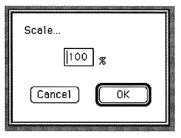

Converts the amplitude scale for the waveform currently being edited. The following window is displayed.

The parameters set in this window are as follows:
Rate
Enter a percentage to scale.
You can set a value between 1 and 200.
OK
Rewrite temporary memory data of AIFF file.